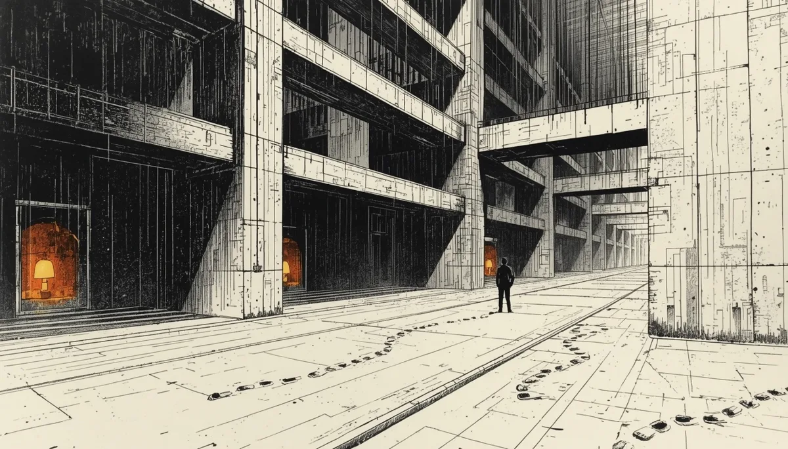
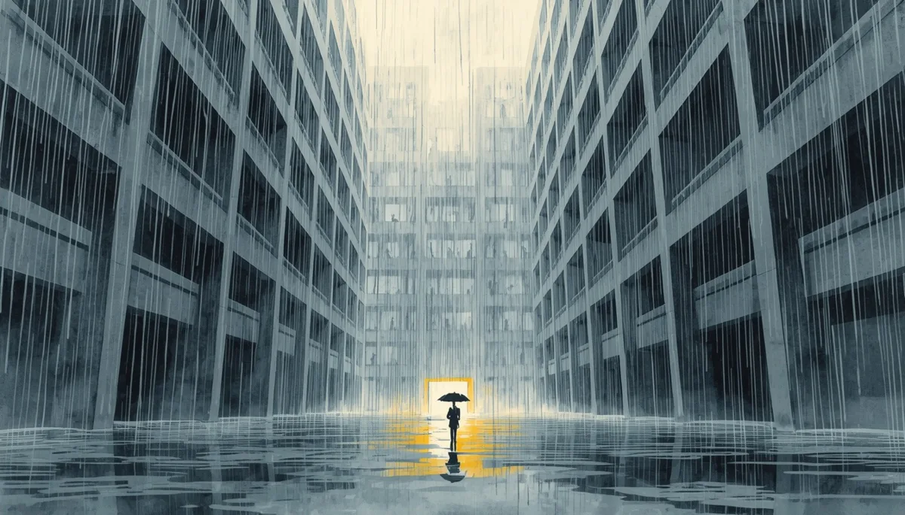
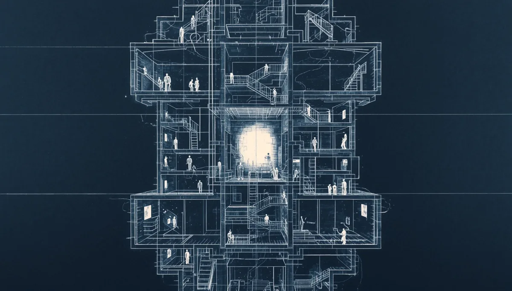

Three takes on Monolith's monochrome ink style, each drawn around the chosen lyric, 'the concrete remembers your weight'. Images: Leonardo.Ai (Lucid Origin), free plan.
Connecting to shared choices…
Your selection is shared with the agents after saving. You can also just reply on Telegram with a letter.
Option A
Bone & Ember

Description. Dry, monumental halls drawn in black ink on bone paper. Footprints of everyone who ever walked here are pressed into the concrete floor; a few ember-orange lamps burn in doorways. Closest to Monolith's stark ink.
Option B
Rain & Sodium

Description. Ink with grey wash: it rains inside a colossal atrium, and the silhouettes of past residents still stand in the windows. One sodium-yellow doorway reflects in the flooded floor. Wetter, sadder, more cinematic.
Option C
Blueprint Negative

Description. The building as its own memory: white line on blue-black, a tower cut open in section, every room and stairwell still holding the people who lived there, a warm light at its heart. The most graphic and the most literal take on 'the concrete remembers'.